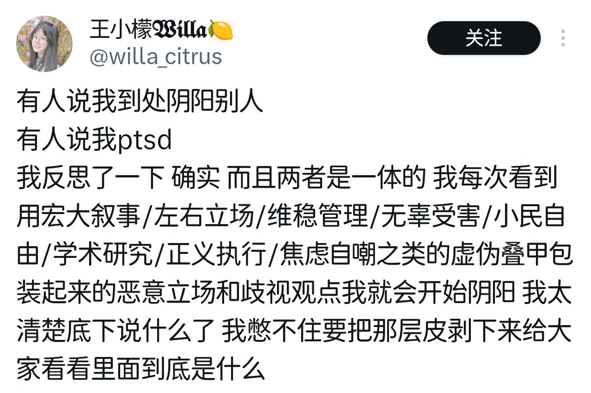

時璃風医詩🌈🏳️🌈
@hagishigure
@biliacat_public 感觉和王小檬这种「厌恶权威的存在是自明性的」的立场很像。

比例猫
@biliacat_public
大多数情况下，在这种心流状态下创造出来的文字，在我又要与“附近”互动之时，自己读着都觉得尴尬别扭。或许是我又被植入了“大他者”审视的意识看待思考的文字。另外地，现代社会注意力的“资源化”更加难以使个人生产有关自我内心的文字了。(2/3)